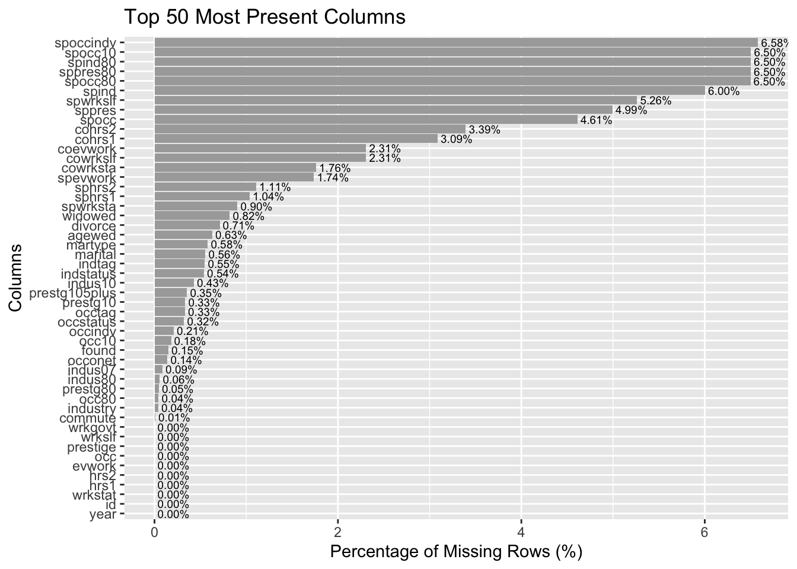
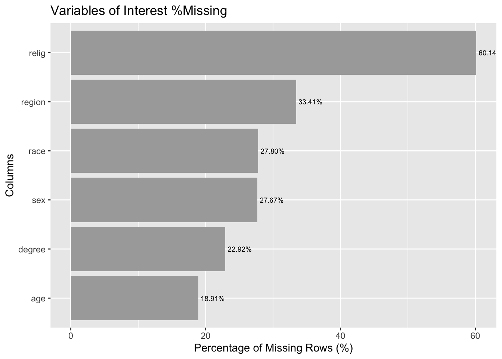

Code
library(gssr)
library(gssrdoc)
library(naniar)
library(dplyr)
data(gss_all)
gss_all |>
select(abany, discaff, cappun, region, age, childs, sex, relig) |>
vis_miss()
The data will be retrieved from the General Social Survey (GSS), a nationally representative survey of US adults run by the National Opinion Research Center at the University of Chicago, with surveys that ran every one to two years dating back to 1972 on a wide range of topics, with at least 1,500 respondents in every sample. The data can be downloaded with the use of their API and the packages gssr and gssrdoc, and contains demographic information on respondents. The major flaw in this data source is that it is almost entirely self-reported survey data. Although this is inevitable when working with survey and social data, it is particularly notable that almost all of the GSS data is the result of self-reported. Furthermore, while at the start the survey ran every year, after 1994, the GSS switched to running on every even-numbered year. This presented significant problems during the COVID pandemic beginning in 2020. Any time series analysis will have to take into account these uneven time points.
Before we start data analysis, we first load the data and the variables we are interested in. The data can be easily accessed through the gssr package. We select specific abortion-related variables as well as demographic variables. We choose seven abortion variables each representing a different reason a woman could be seeking an abortion and respondents’ opinion (Yes, No, NA) on whether a woman should be able to obtain a legal abortion for such a reason. The demographic variables selected are the following:
sex
age
race
degree: highest degree achieved
marital: marital status
childs: total number of children
relig16: religion raised in
relig: current religious preference
partyid: political party affiliation
polviews: political/social views (think of self as liberal or conservative)
reg16: Region of residence at age 16
reg: region of interview
We clean and transform the data by mutating categorical variables into factors with meaningful labels. We also remove the rows with NA values in the abortion-related columns. This is because we discovered through data exploration that the NA values pertaining to these variables represent inapplicable responses. Therefore, we remove these rows to ensure that we only use relevant and complete data for further analysis.
library(gssr)
library(gssrdoc)
library(naniar)
library(dplyr)
data(gss_all)
gss_all |>
select(abany, discaff, cappun, region, age, childs, sex, relig) |>
vis_miss()
Above, we can see a quick visualization of the primary variables - both dependent and independent - and which ones are missing. Not all questions were asked in all years of the survey. The main pattern here is that our response variables (abany = “Whether it should be possible for a pregnant woman to obtain a legal abortion if the woman wants it for any reason”; discaff = “What do you think the chances are these days that a white person won’t get a job or promotion while an equally or less qualified black person gets one instead?”; cappun = “Do you favor or oppose the death penalty for persons convicted of murder?”) are much more likely to be missing. This is because not every question was asked every year of the survey, and respondents are more likely to refuse to answer controversial questions than demographic data such as region, age, etc.
library(ggplot2)
library(dplyr)
cp <- gss_all |> filter(cappun==1 | cappun==2)
cp_df <- data.frame(
column = names(colSums(is.na(cp))),
missing_count = sort(colSums(is.na(cp))),
total_responses = nrow(cp)
)
# variables of interest
cp_df_2 <- cp_df |> filter(column %in% c('age', 'race', 'sex', 'region', 'relig', 'degree'))
# percentage of missing data
cp_df$missing_percentage <- (cp_df$missing_count / cp_df$total_responses) * 100
cp_df_2$missing_percentage <- (cp_df_2$missing_count / cp_df_2$total_responses) * 100
cp_df_sorted <- cp_df |> arrange(missing_percentage)
cp_df_2_sorted <- cp_df_2 |>
arrange(missing_percentage) |>
mutate(column = factor(column, levels = column))
top_50_present <- cp_df_sorted |>
slice_head(n = 50) |>
mutate(column = factor(column, levels = column))
ggplot(top_50_present, aes(x = column, y = missing_percentage)) +
geom_bar(stat = "identity", fill = "darkgrey") +
coord_flip() +
labs(
title = 'Top 50 Most Present Columns',
x = "Columns",
y = "Percentage of Missing Rows (%)"
) +
geom_text(
aes(label = sprintf("%.2f%%", missing_percentage)),
position = position_dodge(width = 0.9),
hjust = -0.1,
size = 2.5
)
ggplot(cp_df_2_sorted, aes(x = column, y = missing_percentage)) +
geom_bar(stat = "identity", fill = "darkgrey") +
coord_flip() +
labs(
title = 'Variables of Interest %Missing',
x = "Columns",
y = "Percentage of Missing Rows (%)"
) +
geom_text(
aes(label = sprintf("%.2f%%", missing_percentage)),
position = position_dodge(width = 0.9),
hjust = -0.1,
size = 2.5
)